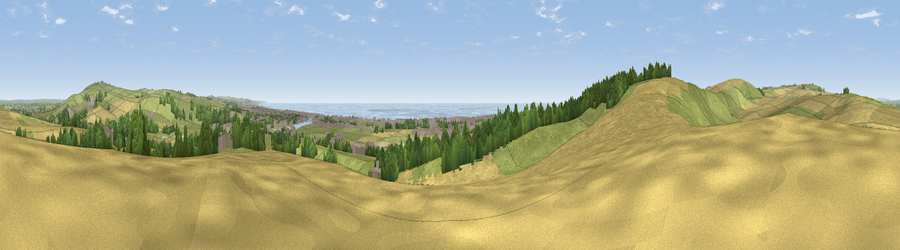

Viewpoint near Lancing
#5722 in England · top 25% of its area beats it · near LancingThe view, rendered

A 360° render of this exact spot computed from the terrain model, tree cover and land cover — summer colours, afternoon light, calibrated against photographs of famous viewpoints. Real trees, hedges and buildings will differ in detail.
The panorama
Grey silhouette: terrain skyline in each direction (720 bearings, Earth curvature and refraction included). Dashed green: skyline with trees (+15 m) and buildings (+8 m) as obstacles. Blue strip: how far the ground is visible on each bearing.
Where the view opens
Wedge length = distance to the farthest visible ground on that bearing (vegetation-aware). Rings at 10, 25 and 50 km.
What fills the view
39% grassland · 28% cropland · 13% woodland · 9% water · 8% built-up · 2% bare ground
Angular shares of the visible panorama (visual magnitude), not map area. Landscape diversity 0.65 (0–1 Shannon).
Key numbers
More beautiful places nearby
The staircase of upgrades: each row has a higher view potential than everything closer. Driving times are estimates from straight-line distance, calibrated against real road routing — check an actual route before setting out.
| Place | Direction | Drive | Score |
|---|---|---|---|
| Steep Down | WNW · 2 km | ~6 min | 79.1 |
| Steyning Round Hill | NNW · 4 km | ~10 min | 79.9 |
| Truleigh Hill | NE · 6 km | ~12 min | 81.4 |
| Viewpoint near Steyning | NW · 6 km | ~13 min | 82.6 |
| Chanctonbury Ring | NW · 7 km | ~15 min | 87.0 |
| Firle Beacon | E · 30 km | ~47 min | 88.9 |
| Viewpoint near Niton | WSW · 76 km | ~99 min | 89.2 |
| Viewpoint near West Bexington | W · 165 km | ~187 min | 89.5 |
50.84694, -0.31281 · source: screening · position refined by local search. Computed location — check access rights before visiting.